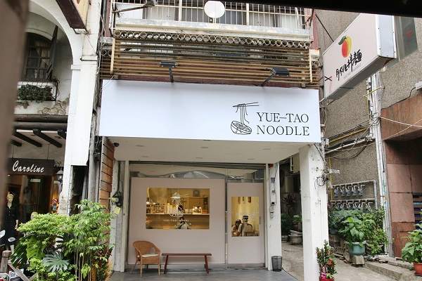
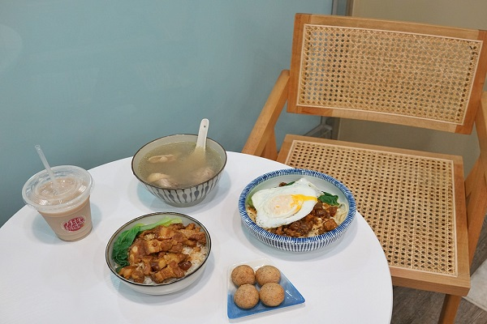
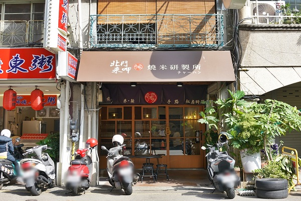
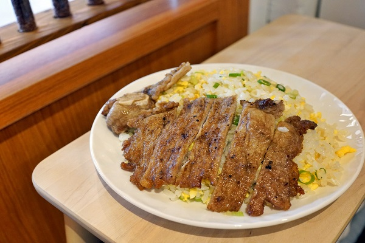
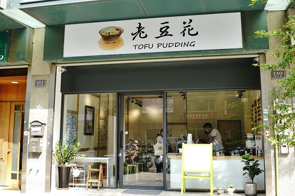
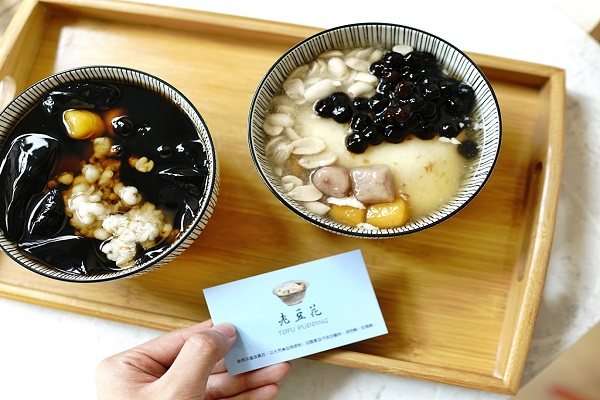

[食記] 新竹小吃
近幾年來，個人覺得新竹離「美食沙漠」這個稱號越來越遠了，
雖然美食店家不算多，但其實該有的都有，
算是走重質不重量的路線啦，為了怕大家找來找去都是重複的那幾家店。
提供給不想踩雷、來新竹玩的人參考，讓你從早到晚不怕沒東西吃 ！
Top1:月桃拌麵
 
新竹市區最近新開了一間麵店叫作「月桃拌麵」，
以阿嬤的名字命名，並傳承阿嬤的好味道，
這裡有好吃的古早味豆瓣麵、滷肉飯、手工芋頭丸，
還有能補補元氣的蒜頭胡椒雞湯，
在立冬過後稍微變涼的天氣下享用這一餐真是幸福～
地址：新竹市東區武昌街33號
電話：0988 581 966
時間：11:30-20:30
Top2:北門來呷燒米研製所
 
吃過一次就愛上，媲美鼎泰豐的黃金炒飯！
今天要分享這間位於北門街的「北門來呷燒米研製所」，
由一對夫妻經營的小店，主打黃金炒飯、肉絲乾拌麵與羹湯，
還有獨門的手路菜。
地址：新竹市北區北門街74號
電話：0972 306 836
時間：12:00-14:00 / 17:30-22:00
Top3:老豆花
 